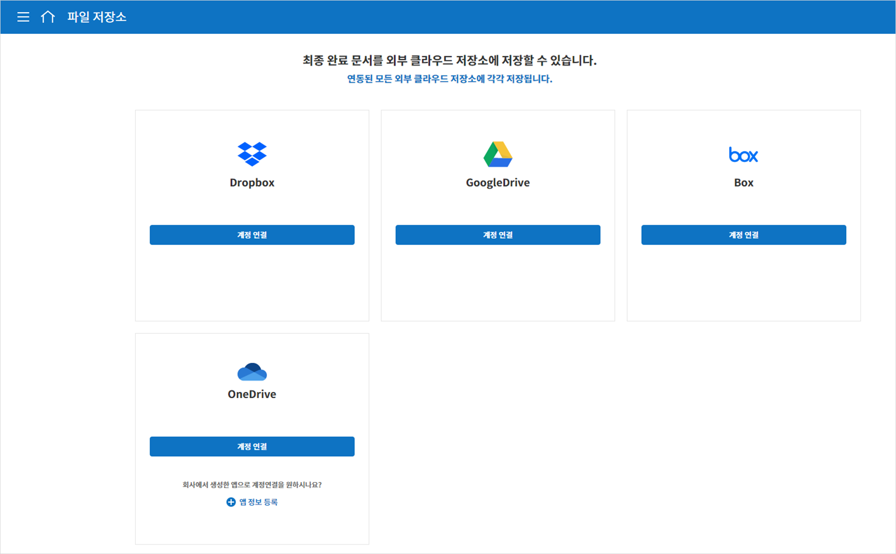
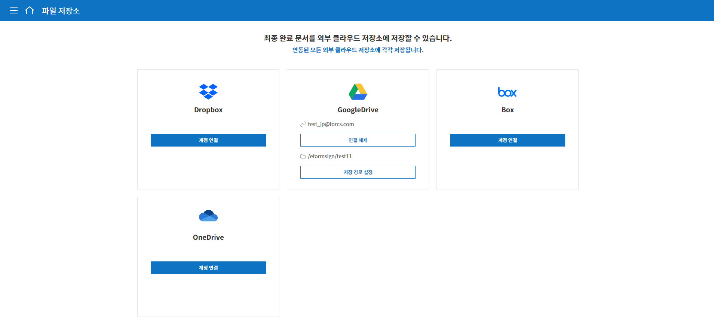

외부 서비스 연동
외부 파일 저장소 연동
eformsign에서 작성된 문서가 완료되면 외부의 클라우드 스토리지 서비스에 자동으로 저장되도록 설정할 수 있습니다.
Note
현재 Dropbox, Google Drive, OneDrive, box를 지원하고 있으며, 외부 파일저장소 연동은 대표 관리자만 설정할 수 있습니다.
메뉴에서 커넥트> 파일 저장소로 이동합니다.
 완료된 문서를 저장할 클라우드 스토리지를 선택한 다음 계정 연결 버튼을 눌러 로그인합니다.
로그인하면 연결 해제와 저장 경로 설정 버튼이 나타납니다. 필요에 따라 저장 경로 설정 버튼을 눌러 저장 경로를 설정합니다.

{kind=link}
{kind=link}
Note
저장 경로 설정 방법
기본 경로는 eformsign 하위 폴더로 회사명 폴더에 저장됩니다. 저장 경로 설정 팝업에서 새 폴더 버튼을 눌러 새로운 폴더를 만들고 저장 경로를 변경할 수 있습니다.
{kind=link}
템플릿 관리 메뉴로 이동합니다.
클라우드 스토리지에 문서를 저장하고자 하는 템플릿을 클릭하여 템플릿 설정 화면으로 이동합니다.
워크플로우 설정 메뉴로 이동합니다.
완료 단계 속성 탭에서 별도의 파일 저장소에 완료 문서 저장하기를 체크합니다. 파일 저장소 메뉴에서 설정한 클라우드 저장소가 연결되어 있는 것을 확인할 수 있습니다. 이후 해당 템플릿으로 문서를 작성한 후 문서가 완료되면 eformsign 외에도 연결된 외부 파일 저장소에 완료 문서가 자동으로 저장됩니다.
{kind=link}
분석 및 리포팅
문서에 입력된 데이터를 Google 스프레드 시트와 Office 365의 엑셀 문서에 자동으로 저장되도록 설정할 수 있습니다. 매번 새로운 문서가 추가될 때마다 CSV 파일을 다운로드하는 것이 번거로울 경우 이 기능을 사용하면 좋습니다.
Note
분석 및 리포팅은 대표 관리자만 설정할 수 있습니다.
{kind=link}
메뉴의 커넥트> 분석 및 리포트로 이동합니다.
Google Spread와 Office 365 중 원하는 서비스를 선택하고 계정 연결 버튼을 클릭하여 로그인합니다.

데이터 연결 관리 버튼을 클릭합니다.
{kind=link}
화면 중앙 또는 오른쪽 상단의 데이터 연결 추가 버튼을 클릭합니다.
{kind=link}
이름, 데이터 연결 시트, 데이터 전송 시점, 템플릿을 설정하고 저장 버튼을 클릭합니다.

{kind=link}
Note
데이터 연동 시트란, Google 시트를 예로 들면 해당 시트의 URL에 해당합니다.
데이터 연결 관리 화면에 데이터 연결이 설정된 시트가 표시됩니다.
{kind=link}
연결된 시트로 이동하면 데이터를 가져올 컬럼(입력항목)이 표시된 것을 확인할 수 있습니다. 이후 작성되는 문서의 경우 문서에 데이터가 입력될 때마다 자동으로 업데이트니다.